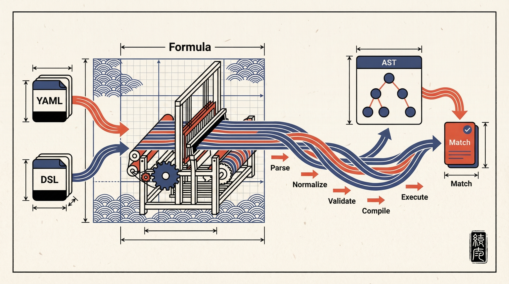
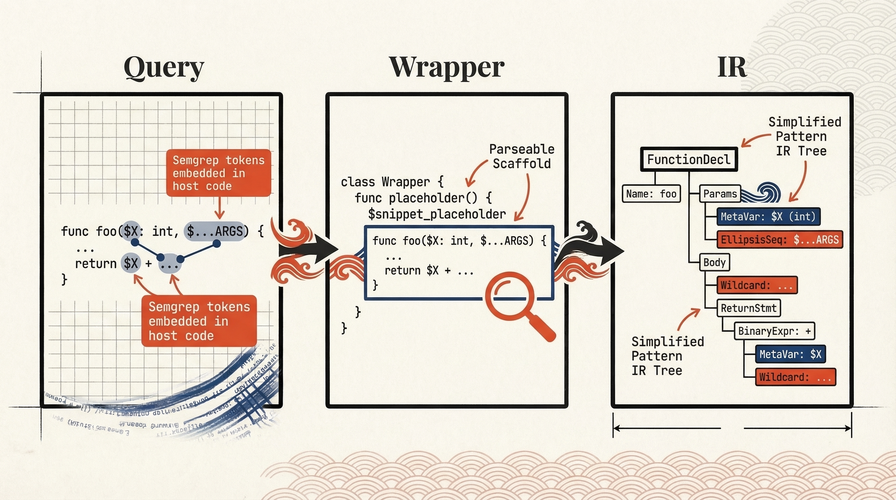
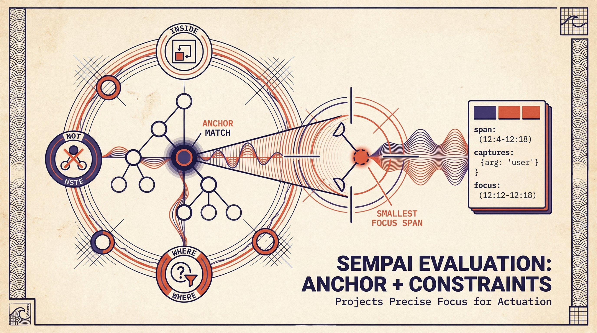

Sempai is where Weaver stops guessing.
String matching is cheap until it hits real code. Then it lies. The Sempai design fixes that by taking Semgrep-shaped queries, lowering them to a normalized formula model, executing them against Tree-sitter syntax trees, and returning precise spans, captures, and focus for actuation.
Input
Two front doors.
Full YAML rule files for compatibility. One-line DSL for interactive use.
Scope
Four languages. Five with a flag.
Rust, Python, TypeScript, and Go are core. HCL is optional behind configuration.
Output
Matches that travel.
Every match carries a span, captures, and optional focus. That is enough to act on.
Discipline
No fake parity.
extract, taint, and join are parsed for compatibility, then reported as unsupported at execution time. Honest software. Rare sight.
Compatibility matters. Theatre does not.
The design deliberately accepts both legacy Semgrep pattern* operators and v2 match formulas. That is the right move. People already have rule corpora. Asking them to throw that away because a new engine wants to feel special would be unserious.
The supported surface is concrete: pattern, pattern-regex, patterns, pattern-either, v2 pattern, regex, all, any, not, inside, anywhere, plus where, as, and fix. The lexical tokens are equally explicit: $X, $_, $...ARGS, ..., and deep ellipsis. The doc even nails down semantic failure cases such as InvalidNotInOr and MissingPositiveTermInAnd. Good. Vagueness is where bugs hide.

Supported Now
- Legacy and v2 query operators on one surface.
- Rule-file parsing and one-liner DSL parsing.
- Search-mode execution for feature extraction.
- Stable Rust facade API with compile and execute phases.
Explicitly Out
- No full Semgrep parity in MVP.
- No autofix application inside Sempai.
- No path-sensitive dataflow analysis.
- No pretending parsed modes are executed modes.
Why Semgrep Syntax
Because the query language should speak code, not ceremony.
Regexps are blind to structure. Raw Tree-sitter queries are married to grammar internals. ast-grep is serious work, but it is still its own ecosystem with its own pattern habits. Semgrep syntax lands in the useful middle: structural, recognizable, portable, and already familiar to people who write code instead of node-kind tax returns.
That matters more in Weaver than it does in a standalone matcher. Sempai is not just finding text. It is selecting code objects for downstream action. The front door has to be expressive enough for structure, readable enough for humans, and stable enough for agents to generate without turning every query into a grammar seminar.
| Surface | What it does well | Why it is not the main interface |
|---|---|---|
| Semgrep syntax | Matches code-shaped patterns, carries metavariables, supports context operators such as inside, and comes with an existing rule culture. |
It is the main interface because it is the only option here that stays structural without becoming hostile. |
| Regexps | Fast lexical filtering, line-oriented searches, and cheap text predicates. Useful enough that Sempai keeps regex as an atom. |
Regexps do not know what a function, decorator, argument list, or nested scope is. They match text. Sometimes that is enough. Usually it is a trap. |
| ast-grep | Strong structural matching and a credible code-query workflow built around its own patterns and rewrite model. | Good tool. Wrong centre of gravity for this design. It has its own pattern language and ecosystem. What matters here is rule portability: people already have Semgrep corpora, and the design commits to that operator vocabulary. ast-grep cannot ingest those rules without a translation layer that would defeat the purpose. |
| Tree-sitter queries | Precise, low-level capture of grammar nodes. Excellent as an escape hatch when you need exact parser internals. | They are too close to the metal for the main authoring path. Users should not have to memorize node kinds and field names just to say “find decorated classes”. That is what the engine is for. |
Why the hierarchy matters
The design gets this exactly right: keep regex as a supported atom, keep raw Tree-sitter queries as an explicit escape hatch, and make Semgrep syntax the primary surface. That is not compromise. That is layering.
Use the high-level language for the common case. Use the sharp tools when you actually need them. Use the right abstraction until it runs out. Then go lower. Not before.
One-liner DSL
The DSL provides a compact expression form for interactive use and CLI flags. It maps directly to the normalised formula model.
Atoms
pattern("...")regex("...")ts("...")
Operators
- and, or (infix)
- not(...) (prefix)
- inside(...), anywhere(...) (prefix)
Decorators
where { focus("$X") }as "$X"fix "..."
Example
weaver observe query \
--lang python \
--uri file:///repo/app.py \
--q 'pattern("@decorator\nclass $C: ...") and not(inside("class Test$_: ..."))'
Tree-sitter Extension Keys
PlannedPlanned. These YAML extension keys are design-surface only for now. When they land, they will cover the exact grammar-node cases where Semgrep patterns are too coarse:
| Key | Type | Purpose |
|---|---|---|
| ts-query | string | Raw Tree-sitter S-expression query used as an escape hatch when Semgrep patterns are insufficient. |
| ts-language | string | Override language for the Tree-sitter grammar (when distinct from the rule's target language). |
| ts-focus | string | Capture name to use as the focus span for actuation handoff. |

Compile once. Execute many. Bound the ugly parts.
The engine design makes the right architectural split: compilation and execution are separate phases, QueryPlan is cacheable, and Tree-sitter parses are cacheable per file revision. That matters because query engines die from repeated work and accidental explosion, not from lack of cleverness.
Snippet compilation is the hard part. Pattern fragments with $X, ..., and deep ellipsis are not clean host code, so Sempai wraps them, rewrites tokens into parseable placeholders, and lowers the result into pattern IR. That is less glamorous than waving around “semantic search”. It is also how you get something real.
Performance Controls
QueryPlancache keyed by language and rule hash.- Tree-sitter parse cache keyed by file revision.
- Candidate-kind pruning from
PatNode::Kind. - Bounded deep matching via
max_deep_search_nodes. - Deterministic match and capture truncation.
Anchors produce matches. Constraints police them.
This is the design choice that makes the rest of the system coherent. inside and anywhere are treated as constraints in conjunction contexts, not as free-standing match producers. Why does that matter? Because otherwise conjunctions become semantic mush and every “positive term” rule becomes a guess dressed as an operator table.
The execution plan splits anchor-producing terms from constraint terms, then evaluates them in order: first anchor matches, then predicates such as Inside, Not, Anywhere, and Where, then compatible existential matches from additional anchors, then projection of span, captures, and focus. That is not just neat. It is debuggable.

The interface is narrow. That is a feature.
The stable facade crate exposes exactly what it should: compile YAML, compile DSL, execute plans. Not a sprawling bag of internal types. The daemon side gets a new weaver observe query surface with --lang, --uri, and one of --rule-file, --rule, or --q. Enough to be useful. Not enough to rot instantly.
CLI Contract
weaver observe query \
--lang rust \
--uri file:///repo/src/lib.rs \
--q 'pattern("fn $F(...) { ... }")'
Request Envelope (daemon internal)
{
"op": "observe.query",
"engine": "sempai",
"language": "python",
"uri": "file:///repo/app.py",
"query": {
"kind": "dsl",
"text": "pattern(\"@decorator\\nclass $C: ...\")"
}
}
JSONL Response (match payload inside stream.data)
{"kind":"stream","stream":"stdout","data":"{\"type\":\"observe.query.match\",\"engine\":\"sempai\",\"rule_id\":\"interactive\",\"uri\":\"file:///repo/app.py\",\"span\":{\"start_byte\":12,\"end_byte\":42,\"start\":{\"line\":2,\"column\":0},\"end\":{\"line\":4,\"column\":0}},\"focus\":null,\"captures\":{\"$C\":{\"kind\":\"node\",\"span\":{\"start_byte\":18,\"end_byte\":26,\"start\":{\"line\":3,\"column\":6},\"end\":{\"line\":3,\"column\":14}},\"kind_name\":\"identifier\",\"text\":\"MyClass\"}},\"message\":null,\"fix\":null}\n"}
{"kind":"exit","status":0}
Payload Fields (inside stream.data)
| Field | Description |
|---|---|
| type | Always observe.query.match. |
| engine | Engine that produced the match (sempai). |
| rule_id | Rule identifier from the rule file, or interactive for one-liners. |
| uri | Source file URI. |
| span | Byte offsets + line/column positions for the full match. |
| focus | Narrowed span when a where { focus("$X") } decorator is present. null otherwise. |
| captures | Map of metavariable names to { kind, span, kind_name, text }. |
| message | Rule-defined message string, or null. |
| fix | Suggested fix text from the rule's fix key, or null. Surfaced as metadata — not applied by Sempai. |
Actuation Handoff
Sempai does not edit code. It hands Weaver an address. focus is the primary target when present; span is the fallback. That keeps query execution and actuation separate, which is exactly where the blast radius should stop.
Observe Integration
Sempai sits alongside get-definition, find-references, call-hierarchy, and grep in the observe command family. Where the other operations ask the language server "what is this symbol?", Sempai asks the syntax tree "where does this pattern appear?". The transport envelope is shared across observe operations, but the uri and span handoff described on this page is specific to Sempai match payloads and other payloads that expose those fields explicitly.
What it refuses to fake
- Parsed modes are not silently "best-effort" executed.
fixis surfaced as metadata, not applied by wishful thinking.- Unsupported constraints return structured errors instead of undefined behaviour with nicer branding.
- Diagnostics are first-class: code, message, primary span, notes.
What it actively defends against
- Match explosions via
max_matches_per_rule. - Capture bloat via
max_capture_text_bytes. - Deep-search blowups via bounded traversal and branch caps.
- Repeated parse work via cache ownership in
weaverd.
| Safety Limit | Default | Effect |
|---|---|---|
| max_matches_per_rule | Configured per deployment | Truncates output deterministically once the cap is reached. |
| max_capture_text_bytes | Configured per deployment | Truncates or disables text fields in capture objects. |
| max_deep_search_nodes | Configured per deployment | Bounds deep-ellipsis traversal to prevent combinatorial blowup. |
| Mode | Parse | Execute |
|---|---|---|
| search | Yes | Full support |
| extract | Yes | UnsupportedMode |
| taint | Yes | UnsupportedMode |
| join | Yes | UnsupportedMode |
The crate split is not decorative.
The design proposes a facade crate (sempai) over focused internal crates for core model, YAML, DSL, Tree-sitter backend, and fixtures. That separation keeps the public API stable while letting the parser and backend evolve at a sane pace. One crate to consume. Several crates to argue with internally. Correct.
| Crate | Role |
|---|---|
| sempai | Stable facade and convenience entrypoints. |
| sempai_core | Data model, diagnostics, plan IR, semantic validation. |
| sempai_yaml | Rule-file parsing via saphyr and serde-saphyr. |
| sempai_dsl | One-liner DSL parsing via logos and Chumsky. |
| sempai_ts | Tree-sitter backend, language profiles, matcher. |
| sempai_fixtures | Corpora and helpers for tests. |
Roadmap, Compressed
- 1. Ship core infrastructure: scaffolding, stable API, YAML parsing, DSL parsing.
- 2. Ship Tree-sitter backend: language profiles, snippet parsing, matcher, escape hatch.
- 3. Ship Weaver integration: daemon path, CLI surface, JSONL streaming, actuation handoff.
Bottom Line
Sempai does not need to be magical. It needs to be dependable, structural, and explicit about what it can and cannot do. The design understands that. That is why it has a chance.
Primary source
This white paper is based on ../weaver/docs/sempai-query-language-design.md, especially the sections on Goals, System overview, Semgrep compatibility scope, Public API design, Internal architecture, Pattern snippet compilation, Formula evaluation engine, Weaver integration, Diagnostics, Performance and safety, and the implementation roadmap.
Design basis
The page layout and figure treatment follow the material system, palette, grid language, and motif logic established in the design-language page and the reference plates in example_art/.
The three illustrations on this page were generated to clarify the actual mechanics of the design: pipeline flow, snippet compilation, and anchor-plus-constraint evaluation with focus projection.